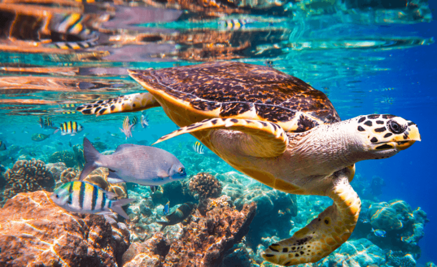
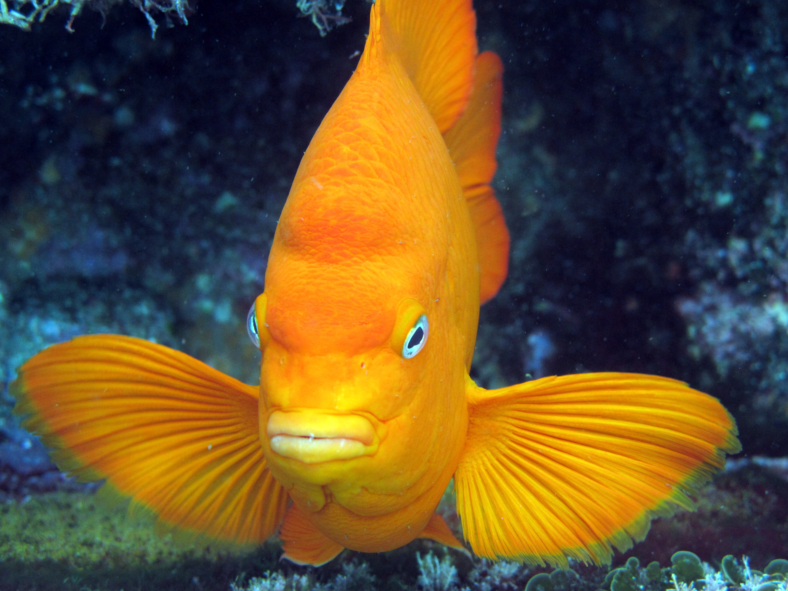
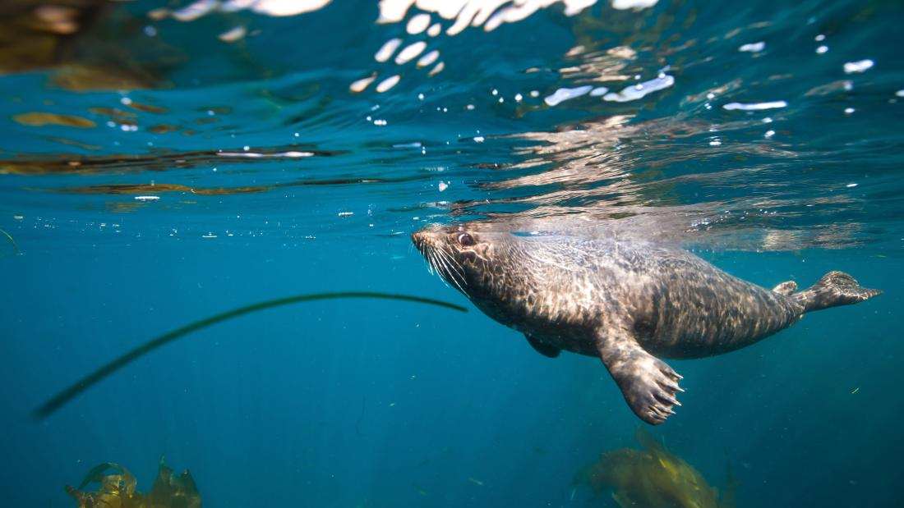

Meet the Coral Council
Ahoy there! We are a trio of passionate marine biology students who go by the name The Coral Council — a small crew with big dreams and saltwater in our veins. United by curiosity and a love for ocean life, we’ve dedicated ourselves to exploring the deep, protecting marine ecosystems, and sharing the wonders of the sea with anyone willing to dive in with us.
Whether it's decoding dolphin chatter, documenting coral bleaching, or just geeking out over plankton under a microscope, we bring our unique strengths together to make waves in and out of the classroom.
From tidepool talks to research dives, every adventure fuels our mission to better understand the ocean — and inspire others to care for it too. So come aboard and get to know us, starting with Dr. Stephen Louise Escanilla and the rest of our salty crew — together, we are The Coral Council!

Dive into the Unkown
Beneath the shimmer of the waves lies a world bursting with wonder — a living tapestry of color, movement, and mystery. Marine Biology is your compass to this hidden realm, where glowing jellyfish drift like lanterns, coral reefs hum with life, and ancient sea creatures still roam the depths.
As a marine biologist in the making, you won’t just study the ocean — you’ll listen to its rhythms, protect its fragile beauty, and unlock its secrets one discovery at a time. So take a deep breath, grab your curiosity, and dive in the ocean is waiting for you.
Marine Biodiversity and Species Discovery
Coral Reef Conservation
Ocean Pollution and Its Impact on Marine Life
Bachelor of Science in Marine Biology
What You Need to Know About BS in Marine Biology?
Bachelor of Science in Marine Biology is an undergraduate degree program that provides comprehensive study and understanding of marine life and ocean ecosystems. This program combines various scientific disciplines such as biology, ecology, oceanography, chemistry, and environmental science to explore the diverse organisms that inhabit marine environments — from microscopic plankton and coral reefs to large marine mammals like whales and dolphins.
Students in this program learn about the structure, function, behavior, and interactions of marine species, as well as the physical and chemical properties of the ocean. The curriculum emphasizes both theoretical knowledge and practical skills, including laboratory techniques, field research, data analysis, and sometimes scuba diving for underwater studies.
The program also addresses important issues such as marine conservation, the impact of climate change and pollution on oceans, sustainable fisheries management, and the protection of endangered species. Graduates are equipped to pursue careers in marine research, environmental consulting, conservation organizations, aquaculture, education, and government agencies focused on marine and coastal resource management.
Why the Ocean Matters: The Role of Marine Biology
Marine biology is critically important because it helps us understand and protect one of the largest and most vital ecosystems on Earth — the oceans. Covering more than 70% of the planet’s surface, oceans regulate climate, produce oxygen, and support a vast diversity of life forms, many of which are essential for ecological balance and human survival.
Studying marine biology enables us to:
Marine Ecosystems: Human activities such as pollution, overfishing, and climate change threaten ocean health. Marine biologists study these impacts and develop strategies to conserve fragile habitats like coral reefs, mangroves, and seagrass beds that are vital for biodiversity.
Preserve Biodiversity: Oceans are home to millions of species, many of which remain undiscovered. Marine biology research helps catalog this diversity and understand the role each species plays in maintaining healthy ecosystems.
Preserve Biodiversity: Many communities depend on the ocean for food and livelihoods. Marine biologists work to ensure fisheries are managed sustainably, protecting species from depletion while supporting economic needs.
Advance Medical and Scientific Discoveries: Marine organisms are sources of unique compounds with potential applications in medicine, such as new antibiotics and treatments for diseases. Studying marine life can lead to innovations that benefit human health.
Understand Climate Regulation: Oceans play a major role in regulating the Earth’s climate by absorbing carbon dioxide and heat. Marine biology helps us comprehend how climate change affects oceanic processes and how these changes, in turn, impact global weather and ecosystems.
Raise Environmental Awareness: By uncovering the hidden complexities of marine life, marine biology inspires people to value and protect the oceans. Education and outreach efforts based on marine biology promote conservation and responsible stewardship.
Career Opportunities for Marine Biology Graduates
A Bachelor of Science in Marine Biology opens the door to a wide range of exciting and impactful career paths, both in research and applied sciences. Graduates are equipped with the knowledge and skills to work in conservation, education, research, and environmental management — all focused on understanding and protecting our ocean systems.
Here are some career paths you can pursue with a degree in Marine Biology:
• Marine Ecologist and Dive Operations Manager - Study marine ecosystems and lead scientific dive teams in research, exploration, and conservation projects.
• Reef Restoration Project Manager - Plan and implement strategies to rehabilitate damaged coral reefs and maintain reef health in response to environmental stressors.
• Marine Biology Technician - Assist in collecting samples, monitoring marine life, and supporting lab or field research under professional scientists.
• Research Assistant - Work alongside marine biologists and oceanographers in data collection, analysis, and publishing findings on marine life and habitats.
• Fishery Data Manager - Analyze data from commercial and environmental fisheries to guide sustainable harvesting and resource management.
• Environmental Engineer - Design and implement systems to reduce ocean pollution, restore marine environments, and support environmental compliance.
• Professor in Marine Ecology - Teach at the university level, conduct original research, and contribute to academic knowledge in marine science.
• Postdoctoral Fellow - Engage in advanced, specialized research in marine biology after completing a Ph.D., often contributing to academic or governmental research programs.
• Educator / Instructor - Promote marine education by teaching in schools, museums, aquariums, or science centers, raising awareness about ocean conservation.
Why BS in Marine Biology?

First and foremost, we've always been interested in animals—whether they live on land, in water, or in the sky. I’ve been eager to understand the environments they inhabit. When it came time to choose a program, I was initially more familiar with BS biology than with marine biology specifically. But as I explored further, I discovered that marine biology goes beyond just studying marine animals—it also covers environmental aspects, conservation, and ecosystem dynamics. This broader perspective, combined with our passion, we are inspired to go with this program

From a young age, I’ve always been fascinated by the diversity of life around us—whether it’s creatures roaming the forests, thriving in rivers and oceans, or soaring through the skies. I wanted to dive deeper into understanding the unique habitats these animals call home. Initially, I was more acquainted with general biology programs, but as I learned more about marine biology, I realized it’s much more than just studying sea creatures. It encompasses the health of entire ecosystems, the impact of human activities, and the importance of preserving delicate marine environments. This comprehensive approach, combined with my genuine enthusiasm for nature, motivated me to pursue marine biology as my chosen field of study.

The reason I chose this course is because I’m truly fascinated by the mysteries of the ocean and the incredible diversity of life it holds. I’m passionate about exploring marine ecosystems and doing my part to help protect them. I’m also deeply attracted to the beauty of ocean life and curious about how marine creatures live, adapt, and thrive in such a vast and dynamic environment. What intrigues me even more is the question of what truly lies in the unexplored depths of the ocean.
What we've Uncovered
Grab your dive gear and curiosity—because we're about to plunge into the heart of what we've discovered so far on this incredible marine biology journey. As students of the sea, we’ve spent countless hours in labs, lectures, and out in the field, uncovering the secrets of marine life and the vast blue world it calls home. From the tiniest plankton to the grandest whales, each lesson has deepened our connection to the ocean and sharpened our mission to protect it.
We’ve braved tide charts, microscope slides, and salt-sprayed notebooks to bring you some of our favorite topics that have sparked our imagination, challenged our thinking, and left us even more in awe of the deep. So come aboard—let’s explore the depths of what we’ve uncovered and dive into the wonders that continue to shape our love for the sea.
Into the depths!
Topic 1: Marine Ecology
You might ask: What is Marine Ecology?
Marine Ecology is the scientific study of marine-life habitat, populations, and interactions among organisms and the surrounding environment including their abiotic (non-living physical and chemical factors that affect the ability of organisms to survive and reproduce) and biotic factors (living things or the materials that directly or indirectly affect an organism in its environment).
Marine ecology is a subset of the study of marine biology and includes observations at the biochemical, cellular, individual, and community levels as well as the study of marine ecosystems and the biosphere.
The study of marine ecology also includes the influence of geology, geography, meteorology, pedology, chemistry, and physics on marine environments. The impact of human activity such as medical research, development, agriculture, fisheries, and forestry is also studied under marine ecology. In some ways, marine ecology is more complex than the relatively straightforward study of a particular organism or environment because of the numerous interconnections, symbiotic relationships, and influence of many factors on a particular environment.
Here's a video explaining what is Marine Ecology
Marine Ecology: The Ocean's Role in Sustaining Life
Marine ecology is not just about studying life beneath the waves—it's about understanding how the ocean functions as Earth’s life-support system. A healthy marine ecosystem is essential to the survival of countless species, including humans. From producing the air we breathe to buffering the impacts of climate change, marine ecosystems are a foundation for global stability. Here's a deeper dive into why marine ecology is vital:
Global Life Support System: Covering over 71% of the Earth's surface, the ocean plays a central role in maintaining planetary balance. It generates over half of the oxygen we breathe, largely thanks to marine phytoplankton, and absorbs more carbon dioxide than all the world’s rainforests combined. This immense body of water also regulates the Earth’s temperature, weather patterns, and supports the global water cycle. Without it, life as we know it would not exist.
Food Security: Marine ecosystems provide a significant source of nutrition and livelihood for billions. Over 3 billion people rely on seafood as their primary source of protein. Healthy marine environments sustain fisheries and aquaculture, ensuring that future generations can continue to access this vital food source. Disruptions to marine ecosystems—through overfishing or pollution—can directly threaten global food supply.
Economic Value and Livelihoods: The ocean fuels a massive portion of the global economy. Marine and coastal resources contribute to industries like fisheries, aquaculture, maritime transport, offshore energy, and tourism, generating trillions of dollars annually and employing hundreds of millions worldwide. The "blue economy" depends on healthy ecosystems for long-term sustainability and growth.
Climate Regulation and Carbon Sequestration: The ocean acts as a carbon sink, absorbing nearly 25–30% of all CO₂ emissions produced by human activity. Marine organisms such as phytoplankton, kelp forests, and seagrass meadows capture and store carbon efficiently—a process known as blue carbon sequestration. By studying marine ecology, scientists can better understand how to preserve and enhance this natural climate buffer.
Coastal Protection and Disaster Mitigation: Natural barriers like coral reefs, mangroves, and seagrass beds provide a frontline defense for coastal communities. These ecosystems buffer shorelines from storm surges, coastal erosion, and rising sea levels, reducing the impact of natural disasters. Mangroves alone can reduce wave energy by up to 66%, safeguarding both human lives and infrastructure.
Ecological Interconnectedness: Marine ecosystems are not isolated—they are tightly connected to land, air, and freshwater systems. Ocean currents transport nutrients, heat, and organisms across the globe, influencing weather systems, global fisheries, and even agricultural productivity on land. Disturbances in one part of the ocean can ripple across the planet, making ecosystem health a global concern.
Topic 2: Ichthyology
Welcome to the World of Ichthyology
Ichthyology is a specialized branch of zoology devoted to the scientific study of fish. It explores the biology, behavior, classification, anatomy, and ecology of a vast array of fish species. From colorful coral reef dwellers to deep-sea predators, ichthyology provides essential insights into the lifeforms that inhabit aquatic environments around the globe.
Ichthyology is commonly defined as 'the study of fish' or 'that branch of zoology dealing with fish'. A fish is, literally, a vertebrate (i.e., animal with a backbone) that has gills, a body covered with scales, and lives in the water. However, some species are well known for their ability to leap clear of the sea surface and glide long distances using their fins as wings. In addition, other species can live out of the water for quite sometime, walk to migrate to other water bodies using auxiliary breathing organs, and some species do not have bodies covered with scales. Also, the word fish is sometime used more broadly to include any edible animal living in water. Here, we limit ourselves to fish in the narrow sense; note that the term 'fishes' refers to more than one type of fish; 'finfish' refers to sharks, some rays and bony fishes, and 'scalefish' refers to fish bearing scales.
Defining what is Ichthyology
At its core, ichthyology focuses on understanding fish in all their diversity. It involves observing how fish grow, move, feed, reproduce, and interact with their surroundings. The discipline brings together multiple fields of science to build a comprehensive view of fish biology and their role in nature.
Key Fields Within Ichthyology
Ichthyology covers several essential fields that help explain how fish function and survive:
• Taxonomy - Identifying and classifying fish species.
• Anatomy - Investigating the internal and external structure of fish.
• Physiology - Exploring how fish systems operate, from respiration to circulation.
• Ethology - Studying fish behavior in natural or controlled environments.
• Ecology - Examining relationships between fish and their ecosystems.
These areas together form a well-rounded scientific foundation for understanding aquatic life.
Why Fish Matter: Diving into the World of Ichthyology
Ichthyology, the scientific study of fish, is a cornerstone of aquatic biology and plays a pivotal role in understanding and preserving aquatic ecosystems. Fish are the most diverse group of vertebrates, with over 35,000 recognized species inhabiting a wide range of aquatic environments
1. Biodiversity and Ecosystem Health
Fish are integral to the structure and function of aquatic ecosystems. They occupy various trophic levels, influencing food webs and nutrient cycles. For instance, the removal of certain fish species can lead to trophic cascades, disrupting ecosystem balance . Studying fish diversity and distribution helps in monitoring ecosystem health and identifying environmental changes.
2. Conservation and Sustainable Management
Ichthyology informs conservation strategies by providing data on fish populations, reproductive behaviors, and habitat requirements. This knowledge is crucial for establishing Marine Protected Areas (MPAs) and implementing sustainable fishing practices, which are essential for maintaining biodiversity and supporting fisheries.
3. Impact of Climate Change
Climate change poses significant threats to fish populations through altered water temperatures, acidification, and habitat loss. Ichthyologists study these impacts to predict shifts in species distributions and inform adaptive management strategies.
4. Economic and Societal Importance
Fish are a primary source of protein for billions of people worldwide and are central to global economies through commercial and recreational fishing industries. Ichthyological research supports sustainable fisheries management, ensuring food security and economic stability.
5. Advancements in Science and Technology
Research in ichthyology contributes to various scientific fields, including genetics, physiology, and environmental science. Innovative techniques such as environmental DNA (eDNA) sampling and molecular barcoding have enhanced species identification and monitoring, facilitating more effective conservation efforts.
Learn More About Ichthyology:
Topic 3: Invertebrate Zoology
Biodiversity Without Backbones: Invertebrate Zoology
Invertebrate zoology is the branch of biology devoted to studying animals without backbones, a remarkably diverse group that makes up over 95% of all known animal species. These organisms range from microscopic zooplankton to giant squid and inhabit virtually every environment on Earth — from deep ocean trenches to tropical rainforests, freshwater lakes, and even urban soil.
This field delves into the diversity, anatomy, physiology, behavior, evolution, and ecology of invertebrate groups such as arthropods (e.g., insects and crustaceans), mollusks (e.g., snails and octopuses), echinoderms (e.g., sea stars and sea urchins), cnidarians (e.g., jellyfish and corals), annelids, sponges, and more. These animals are essential to life on Earth — they pollinate crops, recycle nutrients, form coral reefs, drive marine food webs, and influence global climate patterns.
But the study of invertebrates extends far beyond identifying and classifying species. Invertebrate zoologists also explore:
• Morphology and anatomy of soft- and hard-bodied invertebrates
• Ecological roles and behaviors in terrestrial, freshwater, and marine ecosystems
• Evolutionary relationships and genetic lineages to uncover biodiversity and ancestry
• Symbiosis and interactions with other organisms, including humans
• Biogeography - how invertebrate species change and spread over time and space
The Role and Relevance of Invertebrate Zoology
Here are just a few reasons why invertebrate zoology is a big deal:
Understanding Biodiversity and Ecosystems: Invertebrates are essential to nearly every ecosystem on Earth. They are involved in pollination, decomposition, soil formation, nutrient cycling, and food web dynamics. For example, coral reefs (built by invertebrates) support more than 25% of marine life. Studying these organisms gives scientists insight into how ecosystems function and maintain balance.
Bioindicators of Environmental Health: Many invertebrates, such as freshwater insects or benthic marine organisms, are sensitive to pollution and environmental stress. Their presence or absence helps scientists assess water quality, ecosystem health, and climate change impacts. This makes them key tools in ecological monitoring and environmental assessment.
Economic and Medical Relevance: Some invertebrates serve as disease vectors (e.g., mosquitoes), while others are critical to agriculture (e.g., pollinators like bees) and food industries (e.g., crustaceans and mollusks). Understanding their biology aids in disease prevention, pest control, and sustainable harvesting. Others, like sea sponges and jellyfish, are studied for their potential in biomedical and pharmaceutical research.
Contributions to Scientific Research: Invertebrates like fruit flies, nematodes, and cephalopods are widely used as model organisms in genetics, developmental biology, and neuroscience. These organisms offer simpler systems that help us understand biological processes applicable across the animal kingdom.
Conservation and Systematics: Invertebrate zoologists contribute significantly to the fields of taxonomy, systematics, and conservation biology. Institutions such as the California Academy of Sciences have been conducting invertebrate research for over a century, helping scientists document species diversity and develop strategies to protect threatened invertebrate populations.
Learn more about Invertebrate Zoology by watching this video:
You've reached the ocean floor!
But there's more....
Explore the Digital Reef
Welcome to the Digital Reef — a vibrant hub where science, stories, and creativity collide with a splash of fun! This reef isn’t just for serious study — it’s also where our developers let loose. Expect goofy behind-the-scenes moments, random snapshots, sea-worthy memes, and the kind of quirky content that’s only somewhat related to marine biology.
Just like a real coral reef, this space is full of surprises — rich with knowledge, bursting with personality, and always evolving. So swim around, click through, and enjoy the pulse of our marine-minded community… one byte at a time!